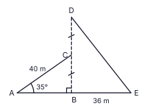

සුපිරි වෙළඳසැලක හිමිකාරියක් වන පවිත්රා රු. 60 000ක් වටිනා ශීතකරණයක් මිලදී ගැනීමට සැලසුම් කරයි. ඇය ඉදිරියේ ඇත්තේ ක්රම දෙකකි. 1 වන ක්රමය: වසරකට සරල පොලී අනුපාතය 18%ක් වන පරිදි මාස 10කට බැංකු ණයක් ලෙස රු. 60 000ක් ගෙන, මාස 10 අවසානයේ ණය මුදල සහ පොලිය එකවර ගෙවීම. 2 වන ක්රමය: රු. 6 550 බැගින් වූ සමාන මාසික වාරික 10කින් ගෙවීම. මෙම ක්රමයේදී සෑම මාසයකම මිලෙන් රු. 6 000ක් බැගින් අඩු වන අතර, සෑම මාසයකම පොලිය ගණනය කරන්නේ එම මාසය ආරම්භයේ ගෙවීමට ඉතිරි මුදල මතය.
0 ≤ x ≤ 8 සඳහා y = f(x) ශ්රිතයේ අසම්පූර්ණ අගය වගුවක් පහත දැක්වේ. ශ්රිතයේ ප්රස්ථාරය සිරස් රේඛාවක් වටා සමමිතික වේ.
| x | 0 | 1 | 2 | 3 | 4 | 5 | 6 | 7 | 8 |
|---|---|---|---|---|---|---|---|---|---|
| y | −7 | 0 | 5 | 8 | 9 | … | 5 | 0 | −7 |
(b) ඒවා උපයෝගී කරගනිමින් ශ්රිතය y = −(x + p)(x + q) ආකාරයෙන් ලියන්න.
රූපයෙන් රෝහලක භූමියක බෑවුමක හරස්කඩක් දැක්වේ. A, B සහ E සමතලා බිමේ පිහිටා ඇති අතර B ලක්ෂ්යය A සහ E අතර වේ. AC සරල මාර්ගය ∠CAB = 35° වන සේ ඉහළට යන අතර AC = 40 m වේ. BCD සිරස් රේඛාවක් වන අතර DC = BC වේ. DE කේබලය D සිට E දක්වා පහළට ඇදී ඇති අතර BE = 36 m වේ. රූපය ඔබේ පිළිතුරු පත්රයට පිටපත් කර දී ඇති දත්ත එහි සලකුණු කරගන්න. (ත්රිකෝණමිතික වගු භාවිත කරන්න.)

අසංකගේ වී ගොයම (2x + 2) m දිගින් සහ (x + 1) m පළලින් යුත් සෘජුකෝණාස්රාකාර බිම් කැබැල්ලකි. එහි (x − 1) m පැත්තක් සහිත සමචතුරස්රාකාර පොකුණක් කපා ඇත. ගොයමේ ඉතිරි අඳුරු කළ කොටසේ වර්ගඵලය 100 m2කි.

ගයාන් තම සුපිරි වෙළඳසැල සඳහා රු. 95 බැගින් වූ කුඩා පැකට් සහ රු. 150 බැගින් වූ විශාල පැකට් ඇතුළුව ඩිටර්ජන්ට් පැකට් 80ක් රු. 9 250කට මිලදී ගත්තේය. කුඩා පැකට් ගණන x ලෙසත් විශාල පැකට් ගණන y ලෙසත් ගන්න.
රෝහල් සායනයක හෙදියක් වන තිළිණි, දින 40ක් තුළ සෑම දිනකම සායනයේ ප්රතිකාර ලැබූ රෝගීන් ගණන සටහන් කළාය. එම දත්ත වගුවේ දැක්වේ.
| දිනකට රෝගීන් ගණන | 15–24 | 25–34 | 35–44 | 45–54 | 55–64 |
|---|---|---|---|---|---|
| දින ගණන | 4 | 9 | 14 | 9 | 4 |